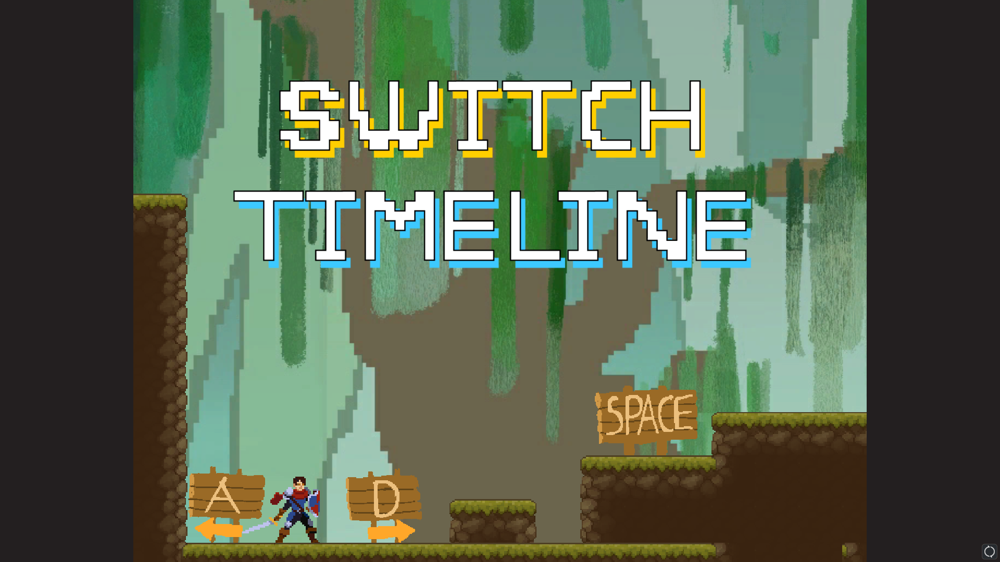

Switch Timeline
アクションパズルゲームです。
こだわりは、自分の理想の世界観を実現するために素材をほぼ全て手書きで作ったことです。
ドットであえて素材を描くことで我ながら上手く表現できたかなと思っています←
製作途中なので多少の不備はご了承ください。
操作方法
Aキー：左移動
Dキー:右移動
Eキー:アクションキー(松明をとる、ボタンを押す)
Qキー:時間切り替え
スペースキー:ジャンプ
本来は↓のような演出が入るのですが、なぜが出力できなかったので、供養のためにここに置いておきます。
↓↓↓パ研君をクリックして、ゲームをプレイしよう↓↓↓